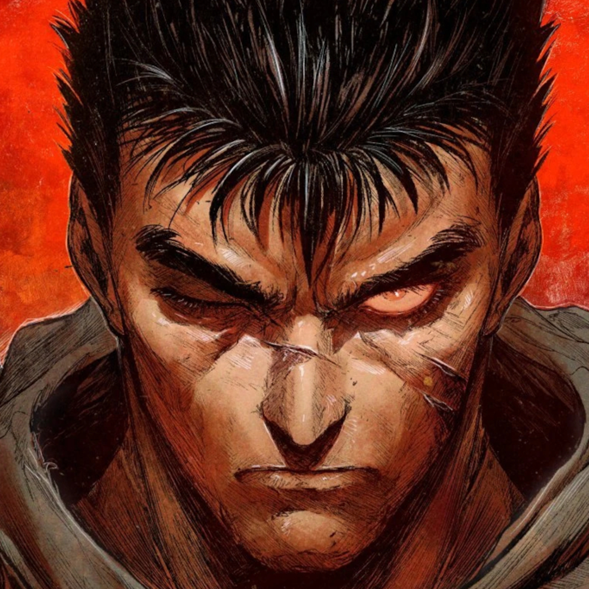
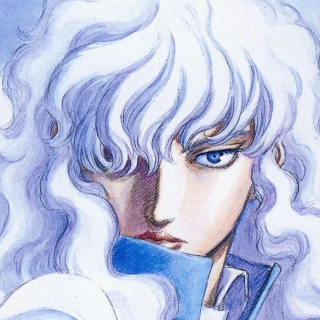
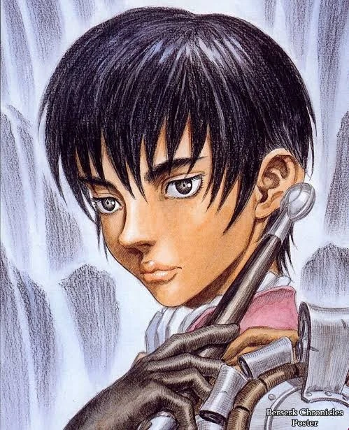
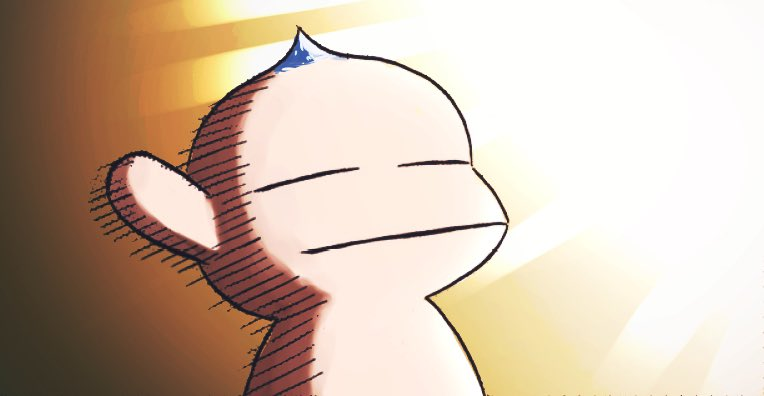
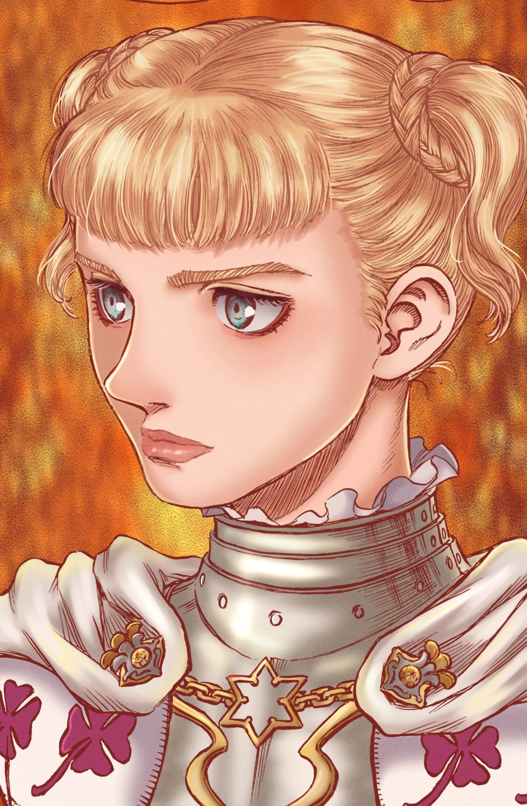
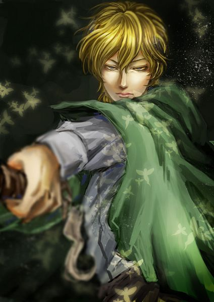
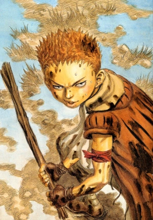
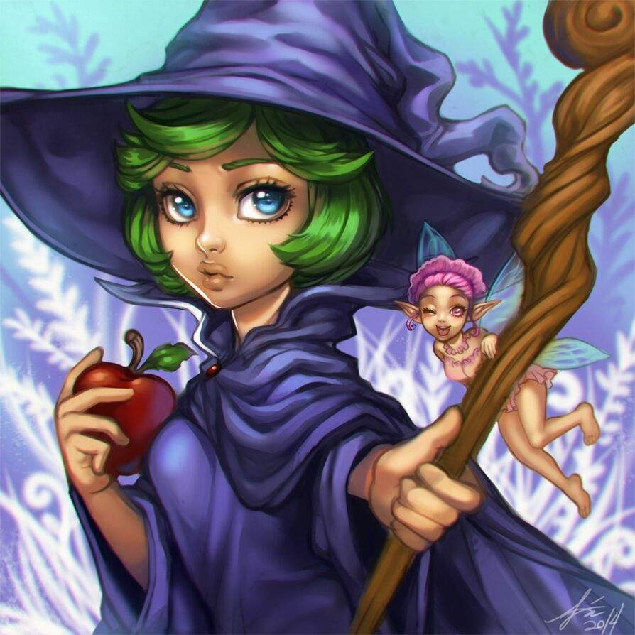
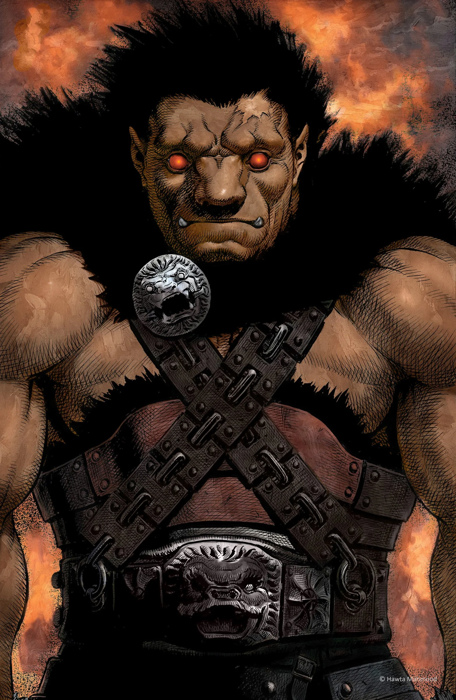

Guts é o protagonista de Berserk, um guerreiro brutal e determinado, marcado por tragédias e uma busca incessante por vingança. Ele é conhecido por sua força sobre-humana, resistência extrema e uma luta constante contra seu destino amaldiçoado.
Griffith é um dos personagens centrais de Berserk e, sem dúvida, um dos mais complexos da história dos mangás. Ele é um líder carismático e estrategista brilhante que persegue seu sonho com uma ambição implacável. Sua jornada, marcada pela ascensão, queda e renascimento, faz dele tanto um herói quanto um vilão, dependendo da perspectiva.
Casca é uma das personagens mais importantes e trágicas de Berserk. Inicialmente uma guerreira feroz e comandante do Bando do Falcão, ela passa por inúmeras provações ao longo da história, tornando-se um símbolo de força, resiliência e trauma.
Puck é um dos primeiros companheiros de Guts em Berserk, servindo como alívio cômico, mas também desempenhando um papel importante na jornada do protagonista. Pequeno e aparentemente inofensivo, ele esconde uma grande sabedoria e possui habilidades mágicas úteis.
Farnese é uma das personagens mais complexas de Berserk, começando como uma fanática líder religiosa antes deembarcar em uma jornada de autodescoberta. Sua história é marcada por conflitos internos, desejo de redenção e busca por um propósito verdadeiro.
Serpico é um dos personagens mais habilidosos e estratégicos de Berserk, servindo como guarda-costas leal de Farnese. Apesar de sua personalidade calma e educada, ele esconde um passado trágico e um rancor silencioso contra aqueles que ameaçam sua senhora.
Isidro é um personagem jovem e impulsivo em Berserk, conhecido por sua energia contagiante e seu desejo de se tornar um grande espadachim, assim como Guts. Apesar de sua juventude e falta de experiência, ele se junta ao grupo de Guts e aos poucos se transforma em um aliado importante e fiel.
Schierke é uma das personagens mais intrigantes e essenciais de Berserk. Ela é uma jovem maga com habilidades sobrenaturais avançadas e se torna uma figura chave no desenvolvimento do enredo. Sua sabedoria e poder místico trazem uma nova dimensão à história de Berserk, misturando magia, espiritualidade e conhecimento oculto.
Nosferatu Zodd é um dos personagens mais aterrorizantes e icônicos de Berserk. Ele é um apostolo, uma criatura monstruosa com imensa força, imortalidade e um desejo insaciável por batalhas. Sua presença impõe respeito e medo, tanto pelos seus inimigos quanto pelos aliados, e ele desempenha um papel crucial ao longo da história.
